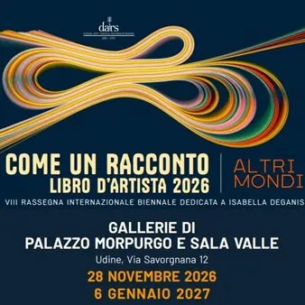

da sab 28 nov a mer 6 gen
Come un racconto - Altri mondi
Dal 28 novembre torna a Udine "COME UN RACCONTO - ALTRI MONDI", l'VIII Rassegna internazionale biennale del Libro d'Artista, promossa da DARS Donna Arte Ricerca Sperimentazione APS-ETS e dedicata a Isabella Deganis. Un viaggio tra immaginazione, creatività e sperimentazione, in…
 Indicazioni
Indicazioni
- Costi e prenotazioni
- Costo non indicato · Prenotazione non indicata
- Programma
- Programma da verificare. Apri la fonte ufficiale per orari e possibili aggiornamenti.
- In caso di maltempo
- Nessuna indicazione specifica pubblicata.
- Note
- Acquisito automaticamente dalla fonte.
L’EVENTO
Descrizione completa
Dal 28 novembre torna a Udine "COME UN RACCONTO - ALTRI MONDI", l'VIII Rassegna internazionale biennale del Libro d'Artista, promossa da DARS Donna Arte Ricerca Sperimentazione APS-ETS e dedicata a Isabella Deganis.
Un viaggio tra immaginazione, creatività e sperimentazione, in cui il libro diventa opera d'arte e strumento per esplorare nuove possibilità espressive.
L'edizione 2026 riunisce 102 Libri d'Artista realizzati da 19 scuole provenienti da Italia, Spagna, Portogallo e Croazia, coinvolgendo 256 allieve e allievi.
Per la prima volta, le giovani generazioni si sono confrontate con un tema comune, ALTRI MONDI, dando forma a visioni personali e collettive attraverso pagine, immagini, collage e sperimentazioni materiche.
Inaugurazione sabato 28 novembre alle ore 11.00, esclusivamente SU INVITO per le norme di agibilità della sede museale.
Orari di aperturta:
Sabato e domenica 10.00 -13.00 / 15.00-18.00
Chiuso il 26 e 27 dicembre 2026
Apertura straordinaria 6 gennaio 2027
Visite guidate:
sabato 12 dicembre ore 16.00
Prenotazioni: info@dars-udine.it
Consulta il programma completo
IL PROGRAMMA
Programma e orari
Appuntamenti raccolti dalle fonti elencate. Dove manca un orario, non è ancora disponibile in questa scheda.
Programma pubblicato
- Dal 2026-11-28 al 2027-01-06
INFORMAZIONI UTILI
Prima di partire
- Controllare la fonte prima di partire.
ORGANIZZAZIONE